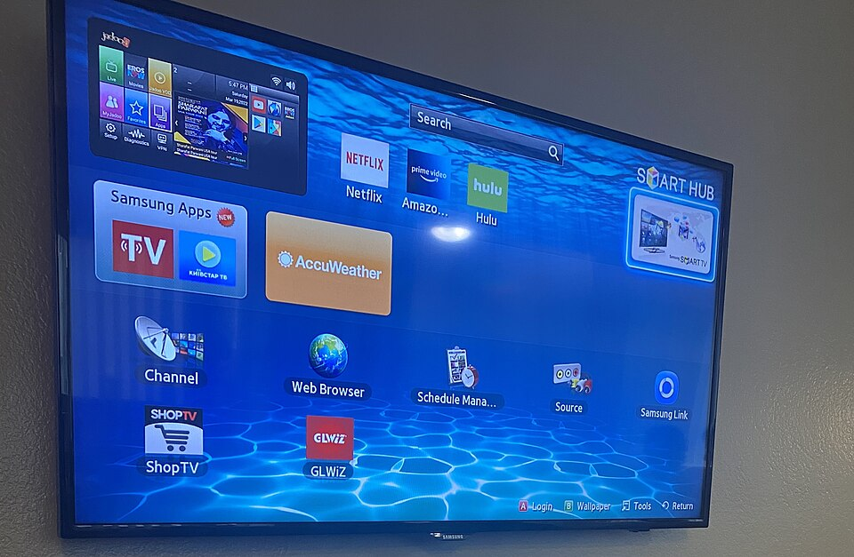
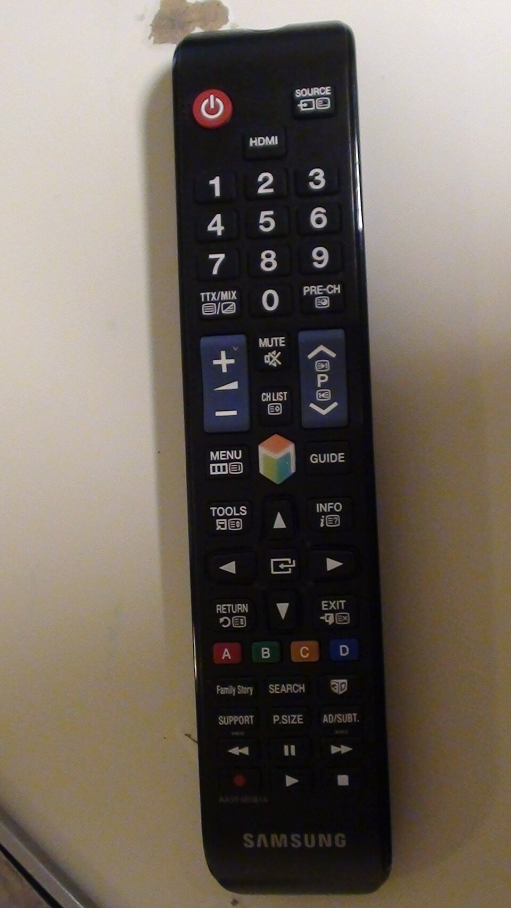

Αν έχεις τηλεόραση Samsung και θέλεις να δεις ελληνικά κανάλια μέσω internet, η σωστή samsung smart tv iptv app κάνει τη μεγάλη διαφορά. Οι σύγχρονες Samsung Smart TV τρέχουν το λειτουργικό Tizen, και αν και δεν είναι τόσο ανοιχτό όσο το Android TV, υπάρχουν αρκετές αξιόπιστες εφαρμογές που μπορούν να παίξουν λίστες M3U, συνδέσεις Xtream Codes και EPG. Το πρόβλημα είναι ότι πολλοί χρήστες δεν ξέρουν από πού να ξεκινήσουν, ποια εφαρμογή να διαλέξουν και γιατί κάποιες αποτυγχάνουν να ανοίξουν ή να φορτώσουν κανάλια.
Σε αυτόν τον οδηγό θα δεις αναλυτικά τι είναι μια εφαρμογή IPTV, ποιες δουλεύουν καλύτερα σε Samsung, πώς γίνεται η εγκατάσταση βήμα-βήμα, πώς προσθέτεις τη λίστα σου και πώς λύνεις τα πιο συχνά προβλήματα. Θα μάθεις επίσης πώς να συνδυάσεις την εφαρμογή με μια αξιόπιστη υπηρεσία όπως το greek iptv, ώστε να απολαμβάνεις ελληνική τηλεόραση, αθλητικά, ταινίες και σειρές σε ποιότητα HD και 4K, ακόμα κι αν ζεις εκτός Ελλάδας.
Ο οδηγός απευθύνεται τόσο σε αρχάριους όσο και σε όσους έχουν ήδη δοκιμάσει IPTV και θέλουν πιο σταθερό αποτέλεσμα. Δεν χρειάζεται τεχνική γνώση, μόνο το τηλεχειριστήριο της τηλεόρασης και μια σύνδεση internet.
- Τι είναι μια εφαρμογή IPTV για Samsung TV
- Ποια μοντέλα Samsung υποστηρίζονται
- Οι καλύτερες εφαρμογές IPTV για Samsung
- Βήμα-βήμα εγκατάσταση
- Πώς προσθέτεις λίστα και EPG
- Συχνά προβλήματα και λύσεις
- Συμβουλές βελτιστοποίησης
- Εναλλακτικές συσκευές
- Ελληνικό περιεχόμενο
- Πώς να επιλέξεις πάροχο
- Συχνές ερωτήσεις
Τι είναι μια εφαρμογή IPTV για Samsung TV
Η εφαρμογή IPTV είναι ένας player: ένα πρόγραμμα που παίζει ροές βίντεο από το internet. Από μόνη της δεν περιέχει κανάλια. Χρειάζεται μια λίστα ή μια συνδρομή που της δίνει τις διευθύνσεις των ροών. Όταν την ανοίγεις στην τηλεόραση, βλέπεις κατηγορίες καναλιών, πρόγραμμα EPG και, αν υποστηρίζεται, ταινίες και σειρές on demand.
Πώς λειτουργεί στην πράξη
Η εφαρμογή συνδέεται στο internet μέσω της τηλεόρασης, διαβάζει τη λίστα σου και παίζει το κανάλι που επιλέγεις. Η ποιότητα εξαρτάται από τον server του παρόχου, την ταχύτητα της σύνδεσης και την ίδια την εφαρμογή. Μια καλή εφαρμογή φορτώνει γρήγορα, αλλάζει κανάλι χωρίς καθυστέρηση και δεν κρασάρει.
Γιατί να τη χρησιμοποιήσεις απευθείας στην τηλεόραση
Η απευθείας χρήση αποφεύγει επιπλέον συσκευές, καλώδια και τηλεχειριστήρια. Βλέπεις τα κανάλια στη μεγάλη οθόνη, με το ήχο της τηλεόρασης ή του soundbar σου, και χρησιμοποιείς το ίδιο τηλεχειριστήριο που ήδη ξέρεις. Για πολλές οικογένειες αυτή η απλότητα είναι το βασικό πλεονέκτημα.

Σύγχρονη Samsung Smart TV με Tizen.
Ποια μοντέλα Samsung υποστηρίζονται
Οι Samsung Smart TV χρησιμοποιούν το Tizen από το 2015 και μετά. Πριν από αυτό υπήρχε παλαιότερο σύστημα, με περιορισμένες εφαρμογές. Αν η τηλεόρασή σου είναι του 2016 και πάνω, έχεις πολύ καλές πιθανότητες να βρεις συμβατή εφαρμογή.
Τηλεοράσεις με Tizen (2015 και μετά)
Στα μοντέλα αυτά ανοίγεις το Smart Hub, μπαίνεις στα Apps και ψάχνεις εφαρμογές IPTV. Οι σειρές με γράμματα όπως J, K, M, N, Q, R και T είναι οι πιο συνηθισμένες και δουλεύουν χωρίς προβλήματα στις περισσότερες περιπτώσεις.
Παλιότερες τηλεοράσεις
Οι τηλεοράσεις των σειρών E, ES, F και H έχουν περιορισμένη υποστήριξη. Ορισμένες εφαρμογές εξακολουθούν να δουλεύουν, αλλά συχνά η καλύτερη λύση είναι μια εξωτερική συσκευή όπως Fire Stick, Chromecast ή Android TV box. Αν χρειάζεσαι πιο αναλυτική σύγκριση, δες και το οδηγό για το Perfect IPTV.
Οι καλύτερες εφαρμογές IPTV για Samsung
Η αγορά των εφαρμογών αλλάζει συνεχώς, αλλά ορισμένες έχουν αποδείξει ότι δουλεύουν σταθερά σε Tizen. Παρακάτω θα βρεις τις πιο γνωστές επιλογές.
Smart IPTV και SS IPTV
Οι δύο αυτές εφαρμογές είναι από τις πιο διαδεδομένες. Φορτώνουν λίστες M3U μέσω ιστοσελίδας και είναι απλές στη χρήση. Έχουν συνήθως μικρή χρέωση ενεργοποίησης και ταιριάζουν σε όσους θέλουν σταθερότητα χωρίς πολλές ρυθμίσεις.
IPTV Smarters και Smarters Pro
Υποστηρίζουν σύνδεση με Xtream Codes, EPG και ταινίες on demand, με πιο σύγχρονο περιβάλλον. Είναι ιδανικές αν ο πάροχός σου δίνει όνομα χρήστη και κωδικό αντί για απλό link.
Άλλες επιλογές: OTT Navigator, Flix IPTV, Lazy IPTV
Ορισμένες από αυτές είναι διαθέσιμες σε Samsung μέσω επίσημου καταστήματος, άλλες μόνο σε Android TV. Δες πάντα ποια υπάρχει στο δικό σου μοντέλο πριν την επιλέξεις. Για περισσότερες ιδέες στο θέμα των εφαρμογών, διάβασε και το άρθρο μας για το Open TV IPTV.
| Εφαρμογή | Τύπος λίστας | EPG | Κόστος |
|---|---|---|---|
| Smart IPTV | M3U | Ναι | Εφάπαξ |
| SS IPTV | M3U | Ναι | Δωρεάν |
| IPTV Smarters | Xtream Codes | Ναι | Δωρεάν |
Βήμα-βήμα εγκατάσταση
Η εγκατάσταση παίρνει λιγότερο από πέντε λεπτά. Ακολούθησε τα παρακάτω βήματα με τη σειρά.
Βήμα 1: Σύνδεση στο internet
Βεβαιώσου ότι η τηλεόραση είναι συνδεδεμένη στο δίκτυο. Στις Ρυθμίσεις, Γενικά, Δίκτυο, επίλεξε Wi-Fi ή Ethernet και έλεγξε ότι η σύνδεση είναι ενεργή.
Βήμα 2: Άνοιγμα του Smart Hub και αναζήτηση
Πάτησε το κουμπί Home, πήγαινε στα Apps και χρησιμοποίησε το εικονίδιο αναζήτησης. Πληκτρολόγησε το όνομα της εφαρμογής, για παράδειγμα Smart IPTV.
Βήμα 3: Εγκατάσταση και πρώτο άνοιγμα
Πάτησε Εγκατάσταση και περίμενε να ολοκληρωθεί. Μετά το πρώτο άνοιγμα, πολλές εφαρμογές δείχνουν ένα μοναδικό κωδικό ή διεύθυνση MAC που θα χρειαστείς στο επόμενο στάδιο. Σημείωσέ τον.

Το τηλεχειριστήριο Samsung χρησιμοποιείται για όλη την πλοήγηση.
Πώς προσθέτεις λίστα και EPG
Μετά την εγκατάσταση, η εφαρμογή πρέπει να μάθει από πού θα φορτώσει τα κανάλια. Υπάρχουν δύο βασικές μέθοδοι.
Με M3U link
Στις εφαρμογές τύπου Smart IPTV, μπαίνεις στην ιστοσελίδα της εφαρμογής από υπολογιστή, εισάγεις τη διεύθυνση MAC της τηλεόρασης και επικολλάς το M3U link του παρόχου. Μετά κάνεις επανεκκίνηση της εφαρμογής και τα κανάλια εμφανίζονται.
Με Xtream Codes
Στις εφαρμογές τύπου Smarters, δίνεις στην τηλεόραση το όνομα χρήστη, τον κωδικό και τη διεύθυνση του server. Η εφαρμογή φορτώνει αυτόματα κανάλια, ταινίες και πρόγραμμα. Αυτή η μέθοδος θεωρείται πιο εύκολη για αρχάριους.
Ρύθμιση EPG
Το EPG είναι ο οδηγός προγράμματος. Αν δεν εμφανίζεται, έλεγξε ότι η ώρα της τηλεόρασης είναι σωστή και ότι το link EPG είναι συμπληρωμένο. Ανάλογα προβλήματα συγχρονισμού ώρας εξηγούνται στο άρθρο μας για το pool ntp org iptv.
Συχνά προβλήματα και λύσεις
Ακόμα και με σωστή ρύθμιση, μπορεί να εμφανιστούν μικροπροβλήματα. Τα περισσότερα λύνονται εύκολα.
Buffering και κολλήματα
Έλεγξε την ταχύτητα του internet, χρησιμοποίησε καλώδιο Ethernet αν γίνεται και κλείσε άλλες συσκευές που καταναλώνουν εύρος ζώνης. Κάποιες φορές βοηθά και η επανεκκίνηση του router.
Η εφαρμογή δεν ανοίγει ή δεν φορτώνει λίστα
Ξαναεγκατέστησε την εφαρμογή, έλεγξε ότι το link είναι σωστό και ότι δεν έχει λήξει η συνδρομή σου. Ενημέρωσε και το firmware της τηλεόρασης από τις Ρυθμίσεις, Υποστήριξη, Ενημέρωση λογισμικού.
Έλλειψη ήχου ή εικόνας
Μερικά κανάλια χρησιμοποιούν κωδικοποιήσεις που δεν υποστηρίζονται από όλες τις εφαρμογές. Δοκίμασε άλλο κανάλι ή άλλη εφαρμογή. Αν το πρόβλημα αφορά μόνο ένα κανάλι, ειδοποίησε την υποστήριξη.
Συμβουλές βελτιστοποίησης για καλύτερη εικόνα
Ακόμα και η καλύτερη εφαρμογή δεν θα σε ικανοποιήσει αν η τηλεόραση ή το δίκτυο δεν είναι σωστά ρυθμισμένα. Με μερικές απλές κινήσεις μπορείς να βελτιώσεις αισθητά τη ροή.
Ρυθμίσεις δικτύου
Αν ο router σου βρίσκεται μακριά από την τηλεόραση, ένα σύστημα mesh ή ένας powerline adapter μπορεί να λύσει το πρόβλημα. Το καλώδιο Ethernet παραμένει η πιο σταθερή λύση, ειδικά για 4K και για ζωντανούς αγώνες, όπου η παραμικρή πτώση ταχύτητας φαίνεται αμέσως. Απέφυγε να κατεβάζεις μεγάλα αρχεία ή να παίζεις online παιχνίδια την ώρα που βλέπεις αγώνα.
Ρυθμίσεις εικόνας και ήχου
Στις Ρυθμίσεις της Samsung επίλεξε τη λειτουργία εικόνας Standard ή Movie, και απενεργοποίησε υπερβολικές λειτουργίες εξομάλυνσης κίνησης όταν βλέπεις αθλητικά, γιατί μπορεί να δημιουργούν τεχνητά εφέ. Αν έχεις soundbar, ενεργοποίησε την έξοδο Dolby ή PCM ανάλογα με τη συσκευή σου.
Συντήρηση της εφαρμογής
Μία φορά τον μήνα ενημέρωσε την εφαρμογή και καθάρισε την cache. Αν διαθέτεις πολύ μεγάλη λίστα με χιλιάδες κανάλια, δημιούργησε αγαπημένα ώστε να βρίσκεις γρήγορα τα ελληνικά κανάλια που βλέπεις πιο συχνά. Έτσι η πλοήγηση γίνεται πιο γρήγορη και η εφαρμογή καταναλώνει λιγότερη μνήμη.
Εναλλακτικές συσκευές όταν η εφαρμογή δεν αρκεί
Υπάρχουν περιπτώσεις που η εγκατεστημένη εφαρμογή δεν παίζει ικανοποιητικά, είτε λόγω παλιού μοντέλου είτε λόγω περιορισμένης μνήμης. Σε αυτές τις περιπτώσεις μια εξωτερική συσκευή είναι έξυπνη και οικονομική λύση.
Amazon Fire Stick και Android TV box
Οι συσκευές αυτές συνδέονται στη θύρα HDMI και προσφέρουν πολύ μεγαλύτερη ελευθερία εφαρμογών, καθώς μπορείς να εγκαταστήσεις σχεδόν οποιονδήποτε player. Ο επεξεργαστής τους είναι συνήθως ισχυρότερος από αυτόν μιας παλιάς Smart TV, οπότε η αλλαγή καναλιών είναι πιο γρήγορη.
Χρήση κινητού ή υπολογιστή
Μπορείς επίσης να στείλεις την εικόνα από κινητό ή υπολογιστή στην τηλεόραση με Screen Mirroring ή Chromecast. Δεν είναι η πιο άνετη λύση για καθημερινή χρήση, αλλά είναι χρήσιμη ως προσωρινή εναλλακτική ή για γρήγορη δοκιμή μιας νέας λίστας πριν την προσθέσεις μόνιμα.
Τι ελληνικό περιεχόμενο μπορείς να δεις
Η μεγάλη αξία μιας καλής εφαρμογής φαίνεται όταν τη συνδυάσεις με πλούσιο ελληνικό περιεχόμενο. Για όσους ζουν στο εξωτερικό, η Samsung TV γίνεται ένα παράθυρο στην πατρίδα, με καθημερινή επαφή με ειδήσεις, εκπομπές και αθλητικά γεγονότα.
Ζωντανά κανάλια και αθλητικά
Μπορείς να παρακολουθείς τα βασικά πανελλαδικά κανάλια, τα κανάλια ειδήσεων, τα παιδικά και τα αθλητικά, με αγώνες ποδοσφαίρου και μπάσκετ σε ζωντανή μετάδοση. Ο οδηγός EPG σου δείχνει τι παίζει τώρα και τι ακολουθεί.
Ταινίες, σειρές και αρχείο
Εκτός από τα ζωντανά κανάλια, μια πλήρης συνδρομή περιλαμβάνει βιβλιοθήκη με ελληνικές και ξένες ταινίες και σειρές. Μπορείς να τις βλέπεις όποτε θέλεις, χωρίς να περιμένεις το πρόγραμμα του καναλιού, και να συνεχίζεις από το σημείο που σταμάτησες.
Πώς να επιλέξεις πάροχο
Η εφαρμογή είναι μόνο το μισό της εικόνας. Αν η υπηρεσία πίσω της είναι ασταθής, κανένα app δεν θα δουλέψει σωστά. Ψάξε για πάροχο με μεγάλη γκάμα, καλή υποστήριξη και ξεκάθαρη τιμολόγηση.
Τι προσφέρει το Greek IPTV
Το greekiptv.tv προσφέρει +30.000 κανάλια, +150.000 ταινίες και σειρές, ποιότητα HD και 4K, υποστήριξη 24/7 και συμβατότητα με Samsung, LG, Android και Apple TV. Δουλεύει με M3U και Xtream Codes, άρα ταιριάζει σε όλες τις εφαρμογές που αναφέραμε.
Συγκρίνοντας με άλλες υπηρεσίες
Αν θέλεις να δεις και άλλες προτάσεις για σύγκριση, μπορείς να ρίξεις μια ματιά σε υπηρεσίες όπως το tilaa iptv ή το romania iptv. Για ελληνικό περιεχόμενο όμως, μια ειδική υπηρεσία όπως το Greek IPTV προσφέρει πιο πλήρη κάλυψη.
Συνοπτικά, η σωστή samsung smart tv iptv app, μια σταθερή σύνδεση και ένας αξιόπιστος πάροχος είναι ο συνδυασμός που χρειάζεσαι για άνετη θέαση. Δοκίμασε την εφαρμογή που ταιριάζει στο μοντέλο σου, ακολούθησε τα βήματα του οδηγού και αν κολλήσεις, η ομάδα υποστήριξης είναι δίπλα σου.
Πριν αποφασίσεις, σκέψου τι χρειάζεσαι πραγματικά: αριθμό συσκευών, ποιότητα εικόνας, αθλητικά κανάλια και υποστήριξη στα ελληνικά. Μια σωστή επιλογή εξοικονομεί χρόνο και χρήματα και σου εξασφαλίζει εμπειρία χωρίς άγχος.